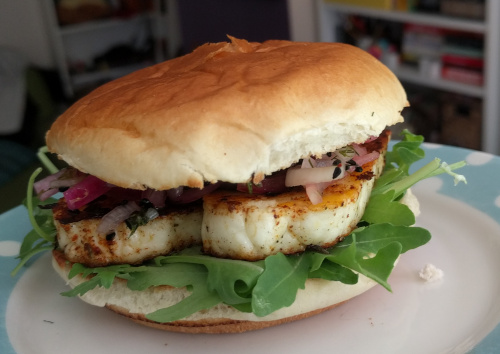

Halloumi burger

Halloumi burger with red onion pickle
Ingredients
For the pickle
- 3 medium red onions
- 3 tbsp sugar
- 4 tbsp red wine vinegar
- Half bunch of dill
- 1 tbsp black onion seeds
- 1/4 tsp salt
For the buger
- Block of halloumi
- Red onion pickle
- 2 brioche buns
- Rocket
- Mayonaise
- 2 tsp Cajun spice
- Olive oil
Instructions
For the pickle
- Chop the onions in to thin half moons
- In a bowl and using your hand, combine the onions, salt and sugar until dissolved
- Add chopped dill, vinegar and seeds. Stir.
- Leave for at least 20 mins, preferably overnight.
For the burger
- Put the skillet on a medium heat and turn on the grill
- Mix cajun spice and oil in a wide bowl
- Cut the halloumi in to 6 pieces and marinate in the spiced oil
- Fry the halloumi for 1-2 mins on each side
- While halloumi is cooking, toast the buns under the grill.
- Layer mayo, rocket, halloumi and pickle between the buns